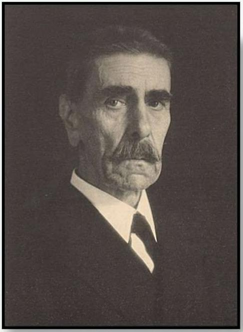

(huyên môn của ông là những bệnh nhân mắc bệnh giang mai nghiêm trọng ~ sau đó được chẩn đoán là tử vong vì không có phương pháp điều trị nào. Ông bắt đầu nhận thấy một mô hình: bệnh nhân giang mai có xu hướng hồi phục nếu bị sốt kéo dài — có vẻ không liên quan. Wagner-lauregg cho điều này đã có từ nhiều thế kỷ trước nhưng các bác sĩ không hiểu rõ: sốt có vai trò giúp cơ thể chống lại nhiễm trùng. Vì vậy, ông đã chuyển sang kết luận hợp lý. Vào đầu những nắm 1900, Wagner-lauregg bắt đầu tiêm cho bệnh nhân các chủng bệnh thương hàn, sốt rét và đậu mùa cấp thấp để gây ra những cơn sốt đủ mạnh để tiêu diệt bệnh giang mai. Điều này có vẻ nguy hiểm. Một số bệnh nhân của ông đã chết vì điều trị. Cuối cùng, ông đã tìm được một phiên bản yếu hơn của bệnh sốt rét, vì có thể chống lại một cách hiệu quả bằng quinine sau những cơn sốt rét run vài ngày. Sau một số thử nghiệm và sai lâm, phương pháp của ông đã hoạt động. Wagner-Jauregg báo cáo 6/10 bệnh nhân giang mai được điều trị bằng liệu pháp sốt rét đã hồi phục. Ông đã đoạt giải Nobal Y học năm 1927. Tổ chức ngày nay ghi nhận: “Công việc chính khiến Wagner-lauregg quan tâm trong suốt cuộc đời làm việc là nỗ lực chữa bệnh giang mai bảng cách gây sốt.” Penidilin cuối cùng đã làm cho liệu pháp điều trị bệnh sốt rét cho bệnh nhân giang mai trở nên lỗi thời, cảm ơn trời đất. Nhưng Wagner-Jauregg là một trong những bác sĩ duy nhất trong lịch sử không chỉ công nhận vai trò của sốt trong việc chống nhiễm trùng mà còn coi nó như một phương pháp điều trị. Những cơn sốt luôn gây lo sợ. Người La Mã cổ đại tôn thờ Febris, Nữ thần bảo vệ mọi người khỏi những cơn sốt. Bùa hộ mệnh được để trong các ngôi đến để x0a đu (ô ấy, hy vọng sẽ ngăn chặn những đợt rùng mình tiếp theo. = Nhưng Wagner-lauregg đang làm ngược lại. Những cơn sốt không phải là sự phiến toái ngáu nhiên. Chúng đóng một vai trò trong con đường phục hồi của cơ thể. Bây giờ chúng ta có bảng chứng khoa học hơn, tốt hơn về tính hữu ích
